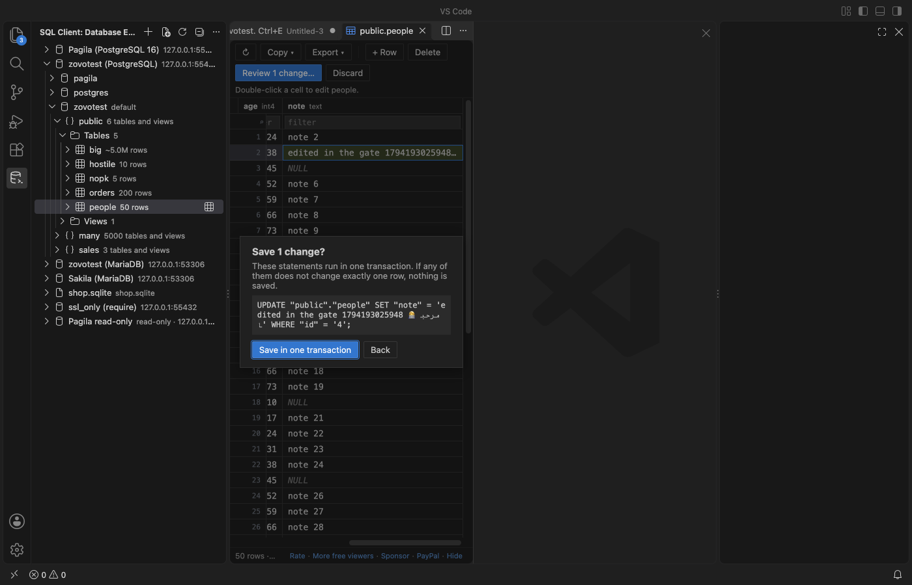
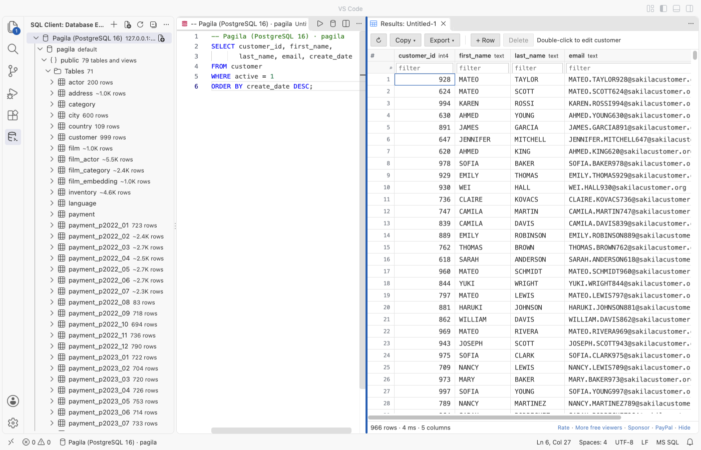

Postgres & MySQL Query Client - SQL Database Tool (SQLite, CSV Export)
Postgres & MySQL Query Client - SQL Database Tool (SQLite, CSV Export), a VS Code extension by Zovo
A free PostgreSQL client and MySQL client, with unlimited connections, free row edits and streamed CSV export. Also MariaDB and SQLite. Press Ctrl+Enter (Cmd+Enter on macOS) to run SQL. No sign-in and no subscription.
Free, MIT license. Needs VS Code 1.90.0 or newer. Extension ID zovo.zovo-sql-client, version 0.2.0.
Optional Zovo Pro (USD 15 once, every Zovo extension) adds an ER diagram, schema compare, CSV import and a query library. Everything that is free today stays free.

Network: the extension connects only to the database servers you add. It sends no telemetry, makes no update check and calls no license server. It never runs a keep-alive or polling query, so your database sees nothing while you are idle. Passwords go to VS Code's secret storage, never to settings or logs.
Questions people ask
Is Postgres & MySQL Query Client - SQL Database Tool (SQLite, CSV Export) free?
Yes. Postgres & MySQL Query Client - SQL Database Tool (SQLite, CSV Export) is free and MIT licensed.
How do I install Postgres & MySQL Query Client - SQL Database Tool (SQLite, CSV Export)?
Click "Install in VS Code" above, or search for zovo.zovo-sql-client in the Extensions view.
Why this one
Measured against the complaints in reviews of other database extensions on the Marketplace (dates are review dates):
| Complaint in reviews | Here |
|---|---|
| "It allows only 2 connections before forcing you to pay annual subscription" (review, 2025-01-08) | Unlimited connections, free. The gate test used 7 connections on one machine. |
| "now you can not even edit a table without paying" (review, 2025-12-26) | Editing rows is free: edit a cell, add or delete a row. You see the exact SQL first, and it runs in one transaction. |
| "this will automatically run 'SELECT 1' statements to ensure that it remains connected" (review, 2026-02-05) | No keep-alive and no polling. In the gate test, the PostgreSQL and MariaDB statement logs showed 0 statements in 60 idle seconds while the extension had connections open. |
| "a subscription makes it an immediate no-go. Maybe worth it if it was a one time purchase" (review, 2025-11-07) | No subscription. Everything above is free. Four extra tools are Zovo Pro: USD 15, paid once. |
Features (free)
- Connections: PostgreSQL (
pgdriver), MySQL and MariaDB (mysql2driver), and SQLite files. Paste apostgres://ormysql://URL, or fill in the form: host, port, user, database and SSL mode (disable, prefer, require, verify-ca or verify-full, with an optional CA file). Use "Test connection" before you save. - Database Explorer: connections, databases, schemas, tables, views, columns with types and keys, indexes and estimated row counts. Each level loads when you open it, so a schema with 5,000 tables opens in one query.
- Query editor: any
.sqlfile runs on the connection shown in the status bar. - Ctrl+Enter runs the statement at the cursor or the selection. Ctrl+Alt+Enter runs the whole file.
- Each result gets its own tab, and a Messages tab lists every statement.
- An error underlines the right place in your SQL.
- Autocomplete knows your tables, views, columns and aliases, plus the keywords of each dialect.
- Results grid: virtual scroll, sort and filter, column resize, and copy as CSV, JSON, Markdown or tab-separated text.
- The first 1,000 rows load at once, and scrolling down loads more.
- When not every row is loaded, sort and filter run on the server, so a 5,000,000-row table sorts correctly.
- Long text and binary cells open in an editor tab (JSON is formatted, binary shows as a hex dump).
- Cancel: stops the running statement on the server (
pg_cancel_backendorKILL QUERY). In the gate test, a 60-second query stopped 0.13 seconds after the click. - Edit rows: works for any table with a primary key. Double-click a cell, use + Row, or Delete. Review shows the exact
UPDATE,INSERTandDELETEstatements. They run in one transaction, and each one must change exactly one row, or nothing is saved. A result without a primary key stays read-only and says why. - Export: CSV, JSON or SQL INSERT, for a result or a whole table. Rows stream to the file in batches. In the gate test, 5,000,000 rows exported in 5.3 seconds, and VS Code's extension host grew by less than 50 MB.
- Safety:
- A read-only switch per connection: the server enforces it for PostgreSQL and MySQL.
- A confirmation before an
UPDATEorDELETEwithoutWHERE, and beforeTRUNCATE. - Clear messages for a wrong password, a refused connection, a server that needs SSL or an untrusted certificate. A connection that does not answer gives up after 10 seconds instead of hanging.
- Query history per connection, kept on your computer. You can turn it off in Settings.
- Dark, light and high-contrast themes follow VS Code.


Zovo Pro (USD 15, paid once, for every Zovo extension)
You can try each Pro tool 3 times for free. After that, one quiet message explains how to unlock it. There are no popups, ads or countdowns, and nothing above is ever locked.
- ER diagram of a schema: tables, keys and foreign-key links. Drag to arrange, then save it as SVG.
- Schema compare: two schemas side by side in VS Code's diff view, from any two connections.
- CSV import into a table: the file is read as a stream, header names are matched to columns, and rows are inserted in batches of 500.
- Query library: named queries saved on this computer that open on any connection.
Zovo Pro is USD 15 once on GitHub Sponsors. If you have already sponsored USD 10 or more, run "Zovo: Unlock Pro with GitHub Sponsors". That sends one question to GitHub and nothing else. A license key is checked on your computer.
To hide the Pro tools from menus and the command palette, set zovoSql.showProFeatures to false.
Getting started
- Open the SQL Client view in the activity bar and click Add Connection.
- Paste a URL such as
postgres://me@localhost:5432/shopor fill in the fields. Click Test connection, then Save. - Click New Query on the connection, type SQL and press Ctrl+Enter.
- Click a table to browse it. Double-click a cell to edit it, and use Export to save every row.
Settings
| Setting | Default | What it does |
|---|---|---|
zovoSql.rowLimit | 1000 | Rows read per query and per Load more |
zovoSql.maxLoadedRows | 100000 | Rows kept in one result (exports have no limit) |
zovoSql.confirmUnboundedWrites | true | Ask before UPDATE or DELETE without WHERE |
zovoSql.connectTimeoutSeconds | 10 | Give up connecting after this many seconds |
zovoSql.history | true | Keep a local query history per connection |
zovoSql.sqliteMaxFileSizeMB | 512 | SQLite files are read into memory up to this size |
Privacy
- Connection settings (without passwords) are stored in VS Code's global storage. Passwords are stored in VS Code's secret storage, which uses the system keychain.
- The extension makes no network calls except to your database servers. The one exception is when you choose "Unlock with GitHub Sponsors": it asks GitHub one question. Monthly sponsors get one silent recheck every 30 days.
- Nothing runs while you are idle. There is no connection on startup, no keep-alive and no polling.
License
MIT. Drivers: pg (MIT), mysql2 (MIT), sql.js (MIT). See THIRD-PARTY-NOTICES.md.
Guides
- Use a PostgreSQL client in VS Code
- Use a MySQL client in VS Code
- See an ER diagram of your database in VS Code
- Compare two Postgres schemas
- See a Postgres EXPLAIN plan as a tree in VS Code
- A free database client for VS Code, with no connection limit
Install Postgres & MySQL Query Client - SQL Database Tool (SQLite, CSV Export)
Click the button to open VS Code and install it, or press Ctrl+P (Cmd+P on macOS) in VS Code and run ext install zovo.zovo-sql-client.
Free, MIT license. Needs VS Code 1.90.0 or newer. Extension ID zovo.zovo-sql-client, version 0.2.0.
Source code and issues are on GitHub.
Zovo Pro and support
Zovo Pro: USD 19 once, every Zovo viewer. It turns on the Pro tools in this extension and in the other Zovo extensions you use. The free features stay free.
You can also support the work with no Pro:
Need your format supported?
Open a format request with a sample file, and I reply there whether it can be done. For USD 299 once, through this GitHub Sponsors tier, I add your file format or a missing feature to this extension, with tests, within 7 days.